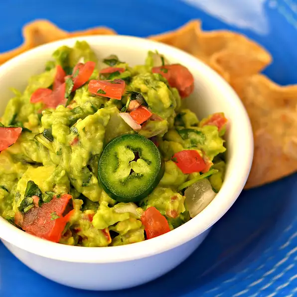

Traditional Mexican Guacamole
Back to page

This guacamole is great! Whether or not you want it spicy, this guacamole
is a dip to die for!
Ingredients
- 2 avocados, peeled and pitted
- 1 cup chopped tomatoes
- ¼ cup chopped onion
- ¼ cup chopped cilantro
- 2 tablespoons lemon juice
- 1 jalapeno pepper, seeded and minced (Optional)
- salt and ground black pepper to taste
Preparation mode
- Mash avocados in a bowl until creamy.
-
Combine simple syrup, 6 cups water, orange juice, and lemon juice in a
large pitcher; refrigerate until cold.
Nutrition Facts
Per Serving: 177 calories; protein 2.7g; carbohydrates 12.2g; fat 14.9g;
sodium 49.9mg.
Back to page